文本
试题
题尾
卷尾
其他
页面布局

级别 | 考点和演练 | 题型 | 考查内容 |
1级 | 简谐运动的证明 | 选择题/计算题 | 证明物体做简谐运动的方法 |
2级 | 动力学分析 | 选择题/计算题 | 简谐运动的动力学分析 |
3级 | 振子能量变化 | 选择题/计算题 | 简谐运动中的能量分析 |
4级 | 简谐运动的动量 | 选择题/计算题 | 简谐运动中的动量分析 |
5级 | 单摆的综合分析 | 选择题/计算题 | 单摆模型综合计算 |

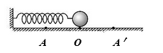
物理量 | 定义 |
位移 | 平衡位置指向小球的位置的有向线段 |
振幅 | 离开平衡位置的最大距离，在同一个简谐运动中，振幅不变 |
全振动 | 从到再到再到再到的过程 |
周期 | 完成一次全振动所需要的时间 |
频率 | 单位时间内完成全振动的次数 |
点 | 点 | 点 | 点 | |||||
速度 | ||||||||
回复力 | ||||||||
位移 | ||||||||
加速度 | ||||||||
动能 | ||||||||
弹性势能 |
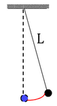
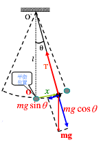
弹簧振子(水平) | 单摆 | |
模型示意图 | 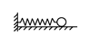 | 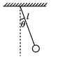 |
条件 | 忽略弹簧质量，无摩擦等阻力 | 细线不可伸长、质量忽略、无空气等阻力、摆角很小 |
平衡位置 | 弹簧处于原长处 | 最低点 |
回复力 | 弹簧的弹力提供 | 摆球重力沿与摆线垂直方向（即切向）的分力 |
周期公式 | （不作要求） | |
能量转化 | 弹性势能与动能的相互转化，机械能守恒 | 重力势能与动能的相互转化，机械能守恒 |


如图甲所示，一个劲度系数为k的轻弹簧一端固定在桌面上，使其直立，另一端上下叠放着物块A、B，两物块质量分别为3m和m．当弹簧和两物块组成的系统静止时，从上方拿走物块B，物块A开始做竖直方向上的运动，如图乙所示．已知重力加速度大小为
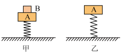
证明：当拿走物体B后，物块A在竖直方向上做简谐运动；

如图所示，一根粗细均匀的木筷，下端绕几根铁丝，竖直浮在盛水的盆中．筷子与铁丝的总质量为m，筷子的直径远小于盆的直径．把木筷向上提起一段距离后放手，木筷就在水中上下振动，振幅为A
．不考虑水对筷子的阻力，忽略铁丝体积的影响，木筷始终有一部分露在水面上．证明：木筷在水中做简谐运动．
1610年，伽利略用他制作的望远镜发现了木星的四颗主要卫星．根据观察，他将其中一颗卫星P的运动视为一个振幅为A、周期为T的简谐运动，并据此推测，他观察到的卫星振动是卫星圆运动在某方向上的投影．如图所示，是伽利略推测的卫星P 运动的示意图，在xOy 平面内，质量为m 的卫星P 绕坐标原点O 做匀速圆周运动．已知引力常量为G，不考虑各卫星之间的相互作用．
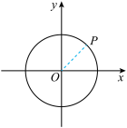
若认为木星位于坐标原点O， 根据伽利略的观察和推测结果：
物体做简谐运动时，回复力应该满足F=-kx． 请据此证明：卫星P绕木星做匀速圆周运动在x 轴上的投影是简谐运动．
简谐运动具有如下特点：
①简谐运动的物体受到回复力的作用，回复力
②简谐运动是一种周期性运动，其周期与振动物体的质量的平方根成正比，与振动系统的振动系数的平方根成反比，而与振幅无关，即：
如图甲，摆长为L、摆球质量为m的单摆在AB间做小角度的自由摆动，当地重力加速度为g．
a、当摆球运动到P点时，摆角为θ，画出摆球受力的示意图，并写出此时刻摆球受到的回复力
b、请结合简谐运动的特点，证明单摆在小角度摆动时周期为
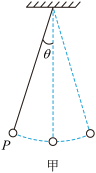
（提示：用弧度制表示角度，当角θ很小时，sinθ≈θ，θ角对应的弧长与它所对的弦长也近似相等）
如图甲所示，一个劲度系数为k的轻弹簧一端固定在桌面上，使其直立，另一端上下叠放着物块A、B，两物块质量分别为3m和m．当弹簧和两物块组成的系统静止时，从上方拿走物块B，物块A开始做竖直方向上的运动，如图乙所示．已知重力加速度大小为
求A做简谐运动的最大加速度和振幅；
求A上升到最高点时，桌面受到弹簧给的弹力大小和方向．
如图所示，A、B两物体组成弹簧振子做简谐运动，在振动过程中A、B始终保持相对静止，图中能正确反映振动过程中A受的摩擦力
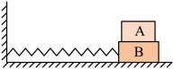
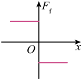
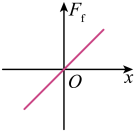
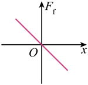
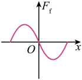
图甲为用手机和轻弹簧制作的一个振动装置．手机加速度传感器记录了手机在竖直方向的振动情况，以向上为正方向，得到手机振动过程中加速度
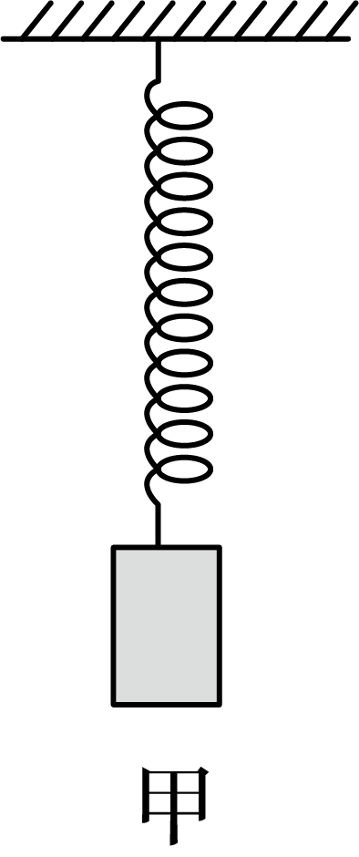
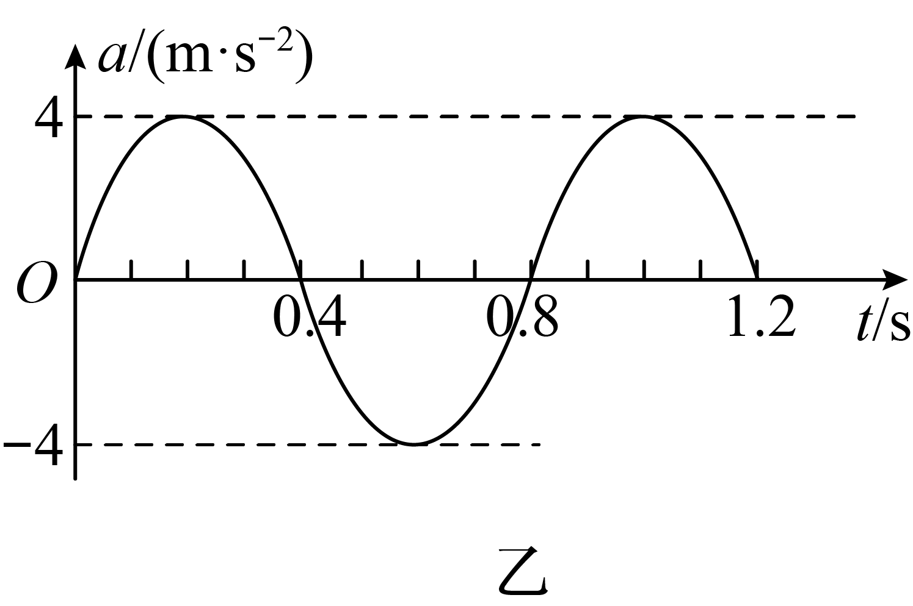
从
如图甲为用手机和轻弹簧制作的一个振动装置，手机A以O点为平衡位置，在竖直方向上M、N两点之间做简谐运动，手机上加速度传感器记录了手机在竖直方向的振动情况，以向下为正方向，得到手机振动过程中加速度a随时间t变化的曲线如图乙，为余弦曲线。下列说法正确的是（ ）
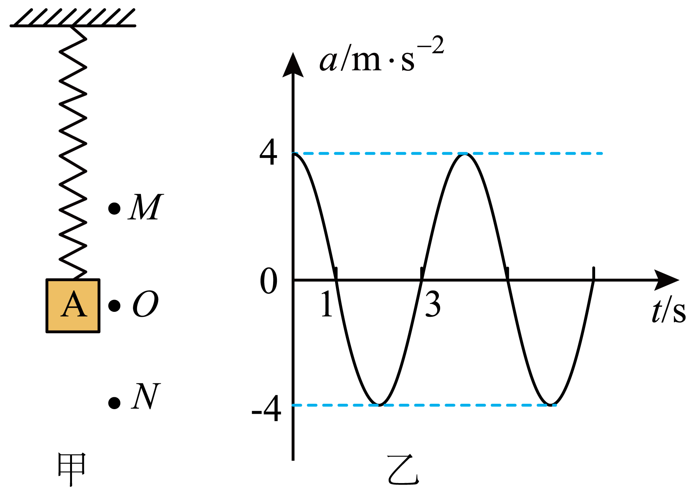
粗细均匀的一根木筷，下端绕几圈铁丝，竖直浮在较大的装有水的杯中（如图甲）。把木筷往上提起一段距离后放手，忽略水对木筷和铁丝的黏滞阻力，木筷和铁丝就在水中上下简谐振动。以竖直向上为正方向，从某时刻开始计时
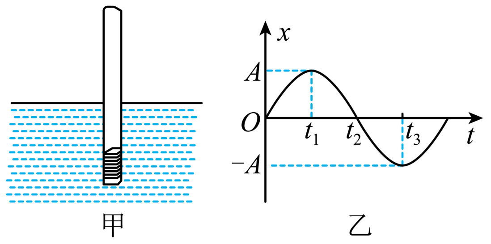
如图1所示，劲度系数为k的轻弹簧竖直固定在水平面上，质量为m的小球从A点自由下落，至B点时开始压缩弹簧，下落的最低位置为C点．以A点为坐标原点O．沿竖直向下建立x轴，定性画出小球从A到C过程中加速度a与位移x的关系，如图2所示，重力加速度为g．对于小球、弹簧和地球组成的系统，下列说法正确的是（ ）
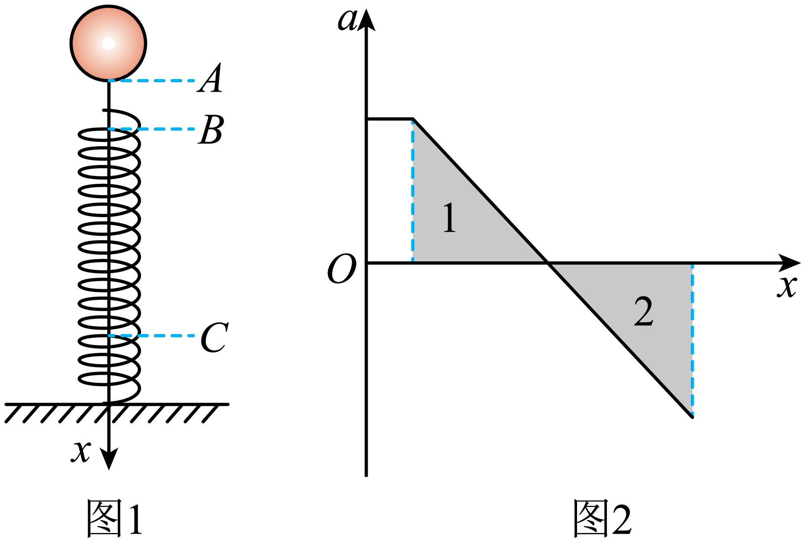
如图甲所示，弹簧振子的平衡位置为O点，在A、B两点之间做简谐运动，取向右为正方向，以振子从A点开始运动的时刻作为计时起点，振子的位移x随时间t的变化如图乙所示，下列说法正确的是（ ）
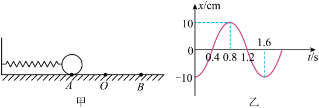
类比是研究问题的常用方法．
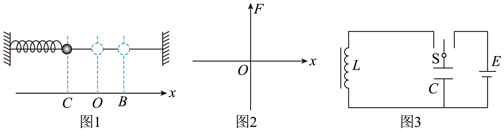
情境1：如图1所示，弹簧振子的平衡位置为
情境2：如图3所示，把线圈、电容器、电源和单刀双掷开关连成电路．先把开关置于电源一侧，为电容器充电，稍后再把开关置于线圈一侧，组成
a、类比情境1，证明电容器的电场能
b、类比情境1和情境2，完成下表．
情境1 | 情境2 |
小球的位移 | |
线圈的磁场能 |
如图所示，一轻质弹簧下端系一质量为m的物块，组成一竖直悬挂的弹簧振子，在物块上装有一记录笔，在竖直面内放置有记录纸．当弹簧振子沿竖直方向上下自由振动时，以速率v水平向左匀速拉动记录纸，记录笔在纸上留下如图所示余弦型函数曲线形状的印迹，图中的y1、y2、x0、2x0、3x0为记录纸上印迹的位置坐标值，P、Q分别是印迹上纵坐标为y1和y2的两个点．若空气阻力、记录笔的质量及其与纸之间的作用力均可忽略不计，则
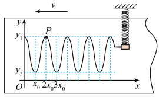
该弹簧振子的振动周期为
该弹簧振子的振幅为
如图所示，轻弹簧左端固定，右端固连一小球（可视为质点），小球沿光滑杆做小振幅为
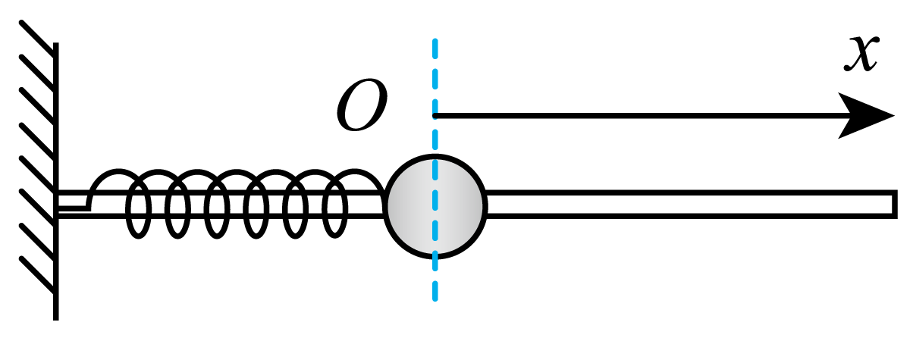
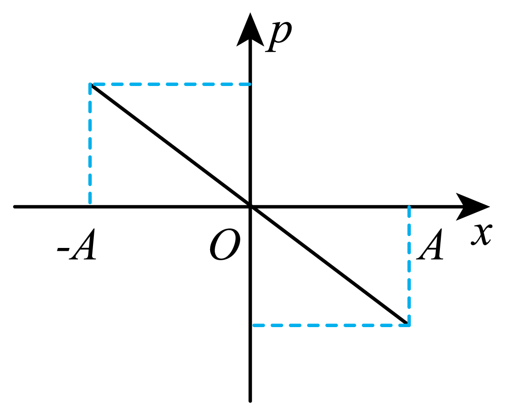
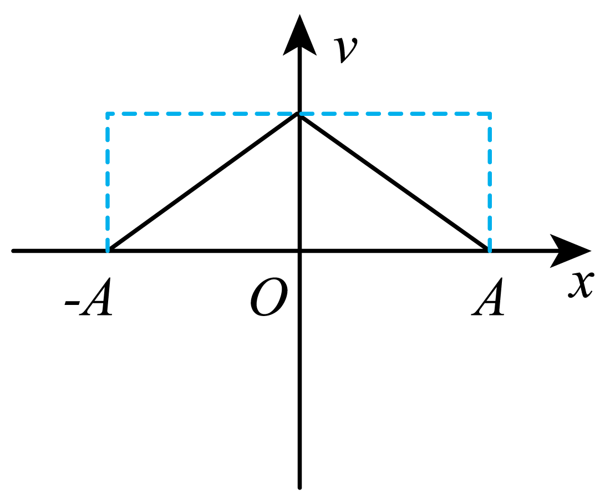
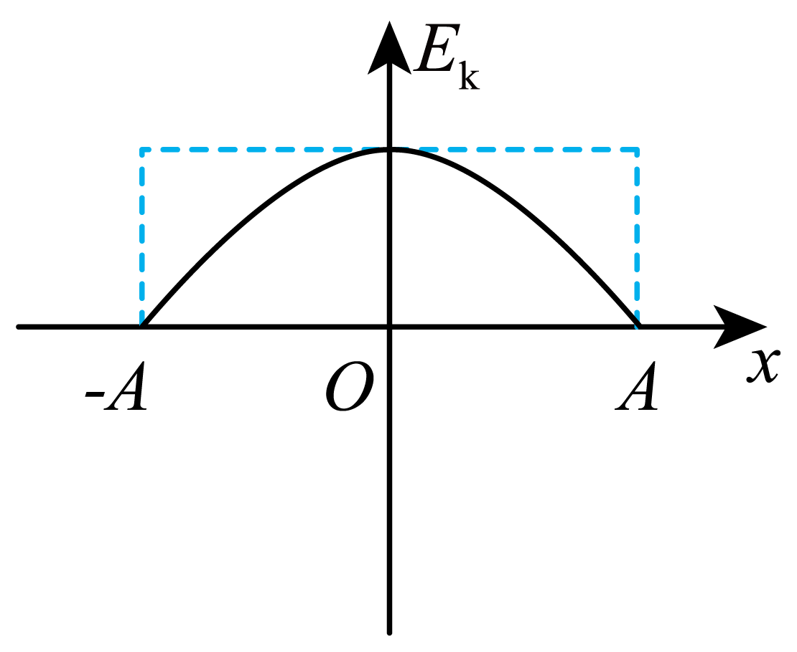
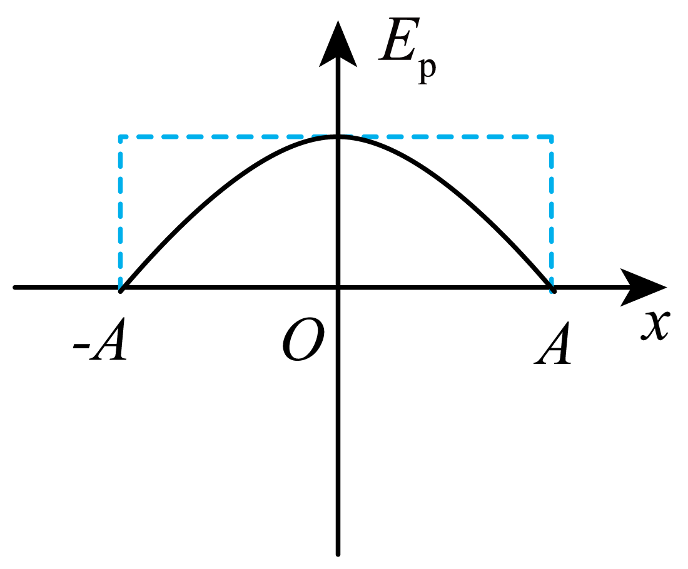
如图（a）所示，轻质弹簧上端固定，下端连接质量为m的小球，构成竖直方向的弹簧振子．取小球平衡位置为x轴原点，竖直向下为x轴正方向，设法让小球在竖直方向振动起来后，小球在一个周期内的振动曲线如图（b）所示，若
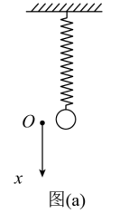
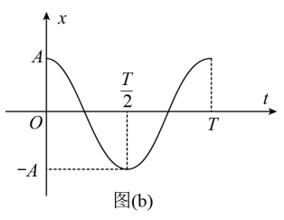
0时刻弹簧弹力大小为
弹簧劲度系数为
简谐运动是常见且重要的运动形式，物体偏离平衡位置的位移
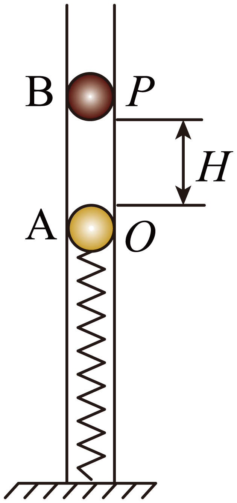
求
求小球
求小球
惠更斯发现“单摆做简谐运动的周期T与重力加速度的二次方根成反比”。为了通过实验验证这一结论，某同学创设了“重力加速度”可以认为调节的实验环境：如图1所示，在水平地面上固定一倾角θ可调的光滑斜面，把摆线固定于斜面上的O点，使摆线平行于斜面。拉开摆球至A点，静止释放后，摆球在ABC之间做简谐运动，摆角为α。在某次实验中，摆球自然悬垂时，通过力传感器（图中未画出）测得摆线的拉力为
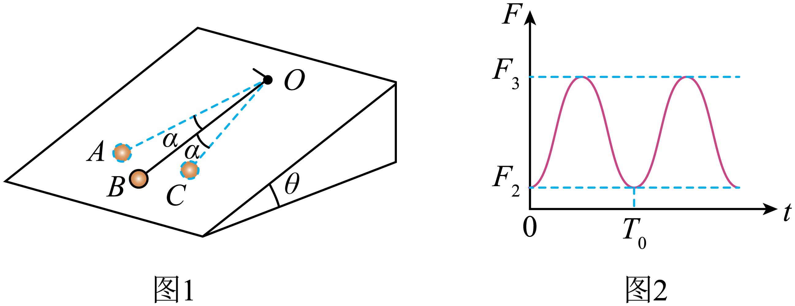
如图甲所示，一单摆做小角度摆动，从某次摆球由左向右通过平衡位置时开始计时，相对平衡位置的位移x随时间t变化的图像如图乙所示。不计空气阻力，重力加速度g取10m/s2。下列说法正确的是（ ）
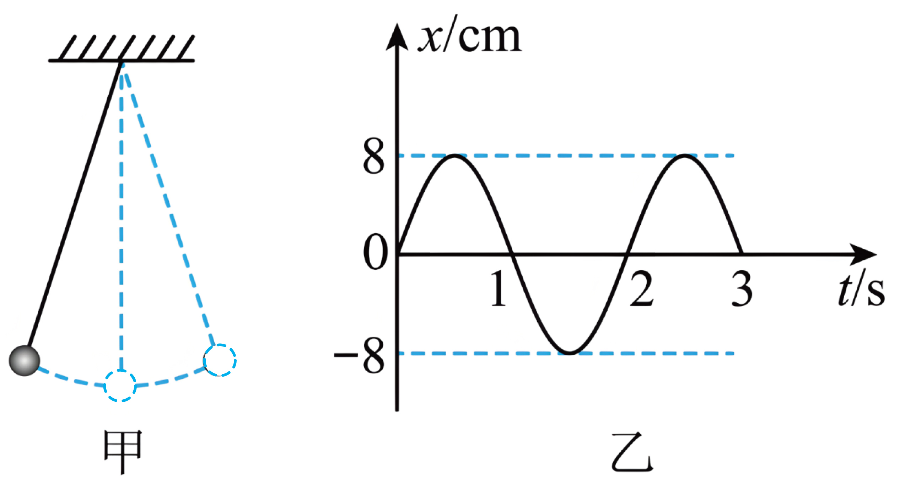
如图所示，固定在竖直平面内的光滑圆弧轨道所含圆弧的度数很小，O是圆弧的最低点。两个完全相同的小球M、N从圆弧左侧的不同位置同时释放。它们从释放到到达O点过程中都经过图中的P点。下列判断正确的是（ ）
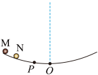
小华同学在学习了单摆之后，她设想了一个问题：如果让摆球带上电荷在磁场中摆动（如图1所示），情况会怎样？与重力场中的单摆（如图2所示）相比，运动情况还相同吗？还是简谐运动吗？于是她试着对这些问题进行了一系列的比较和探究。
如图1所示，把单摆放置在一垂直纸面向里的强磁场中，磁感应强度的大小为B。已知单摆摆长为L，摆球的质量为m，带电荷量为
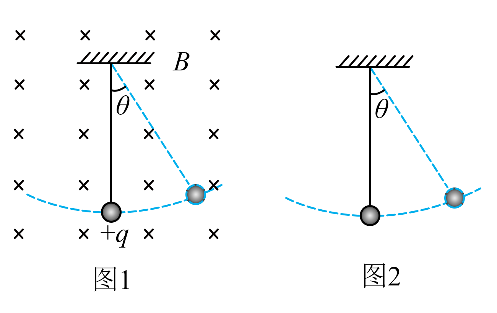
(1)求摆球摆到最低点时的速度大小v。该速度与重力场中摆球摆到最低点的速度大小相等吗？
(2)求摆动过程中细线拉力的最大值T。该拉力与重力场中细线拉力的最大值相等吗？
(3)小芳进一步对该运动进行了多角度的分析后，推断该运动仍然是简谐运动。请你运用学过的知识论证小芳的推断是否正确。
如图所示，在光滑杆下面铺一张可沿垂直杆方向匀速移动的白纸，一带有铅笔的弹簧振子在A、B两点间做机械振动，可以在白纸上留下痕迹。已知弹簧的劲度系数为
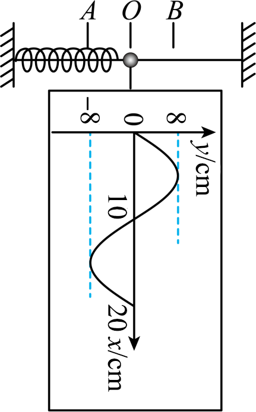
下列说法中，属于简谐运动的是（ ）
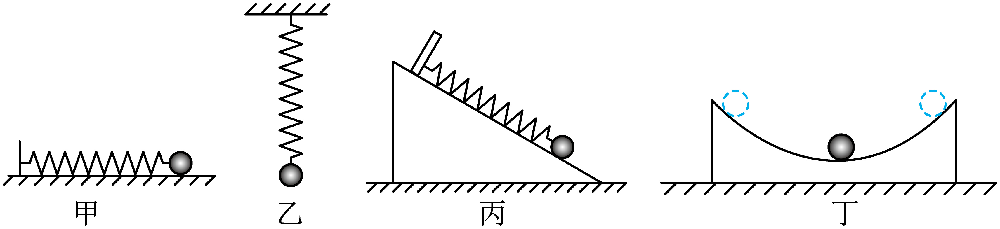
如图1所示，小球悬挂在轻弹簧的下端，弹簧上端连接传感器。小球上下振动时，传感器记录弹力随时间变化的规律如图2所示。已知重力加速度
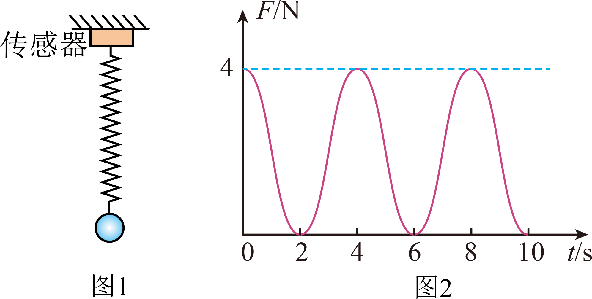
如图所示，一弹簧振子在A、B间做简谐运动，平衡位置为O，已知振子的质量为M，若振子运动到B处时将一质量为m的物体放到M的上面，且m和M无相对运动而一起运动，下述正确的是（ ）
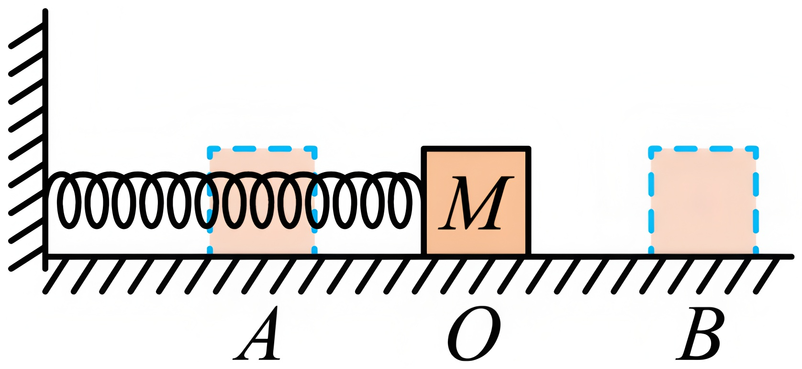
如图甲所示，一个单摆做小角度摆动，以向右的方向作为摆球偏离平衡位置的位移的正方向，得到摆球相对平衡位置的位移
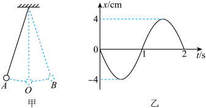
从
该单摆摆长约为
如图所示，一根粗细均匀的木筷下端绕有几圈铁丝，竖直浮在一个较大的盛水容器中，以木筷静止时下端所在位置为坐标原点O建立直线坐标系，把木筷往下压一段距离
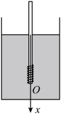
试证明木筷的振动是简谐运动；
观测发现筷子每10秒上下振动20次，从释放筷子开始计时，写出筷子振动过程位移随时间变化的关系式．
如图所示，单摆摆长为
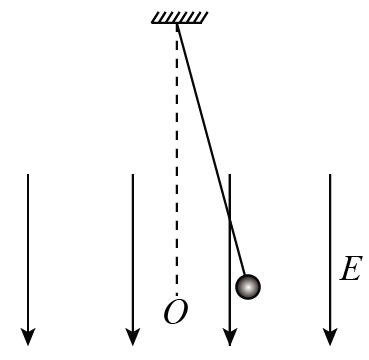
求摆角为
证明：在摆角很小时，摆球的运动是简谐运动．（
如图所示，一轻质弹簧下端系一质量为
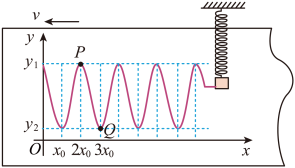
如图
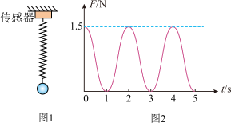
小球的质量为
如图（a）所示，轻质弹簧上端固定，下端连接质量为m的小球，构成竖直方向的弹簧振子。取小球平衡位置为x轴原点，竖直向下为x轴正方向，设法让小球在竖直方向振动起来后，小球在一个周期内的振动曲线如图（b）所示，若
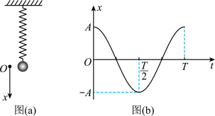
如图甲所示，劲度系数为
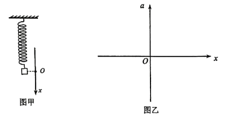
以小物块经过平衡位置向下运动过程为例，通过推导说明小物块的运动是否为简谐运动．
求小物块由最高点运动到最低点过程中，重力势能的变化量
在图乙中画出由最高点运动到最低点过程中，小物块的加速度
如图所示，一水平弹簧振子在
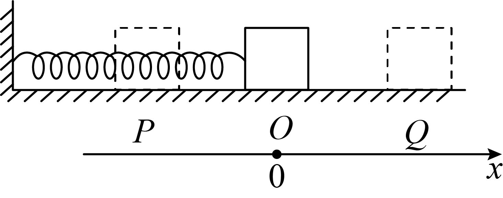
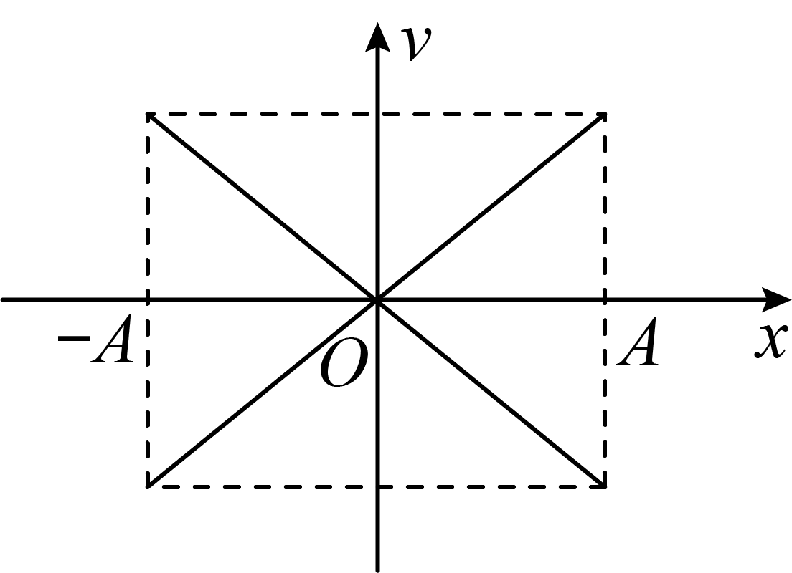
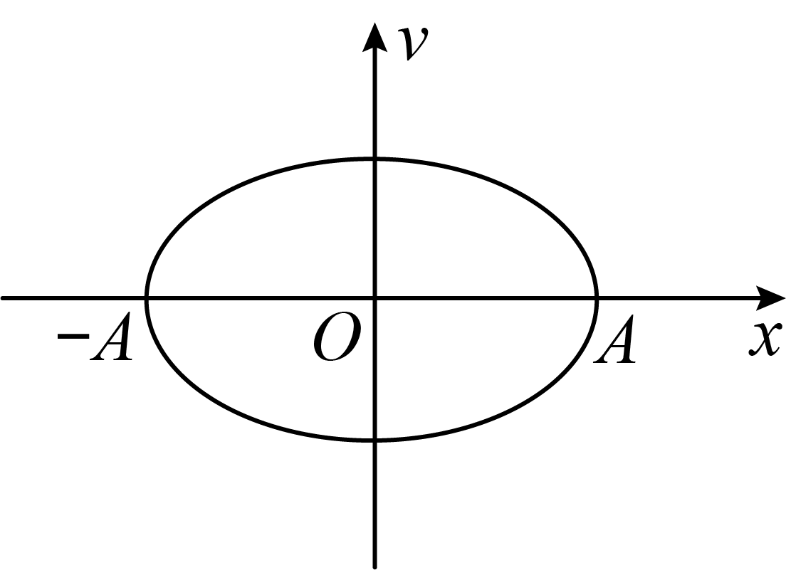
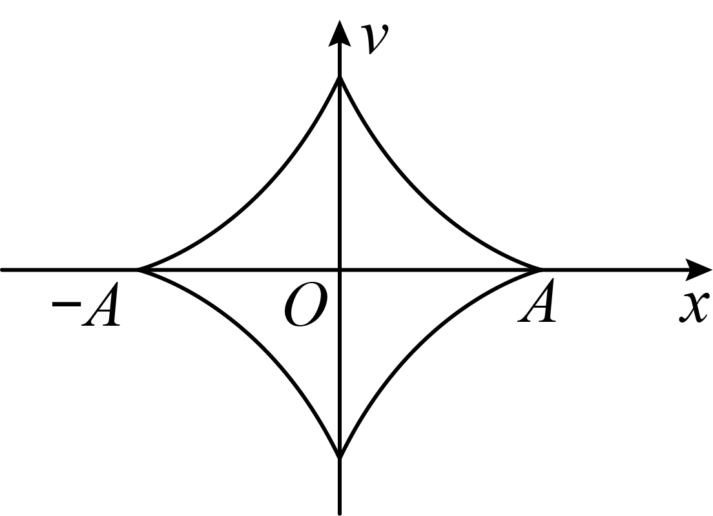
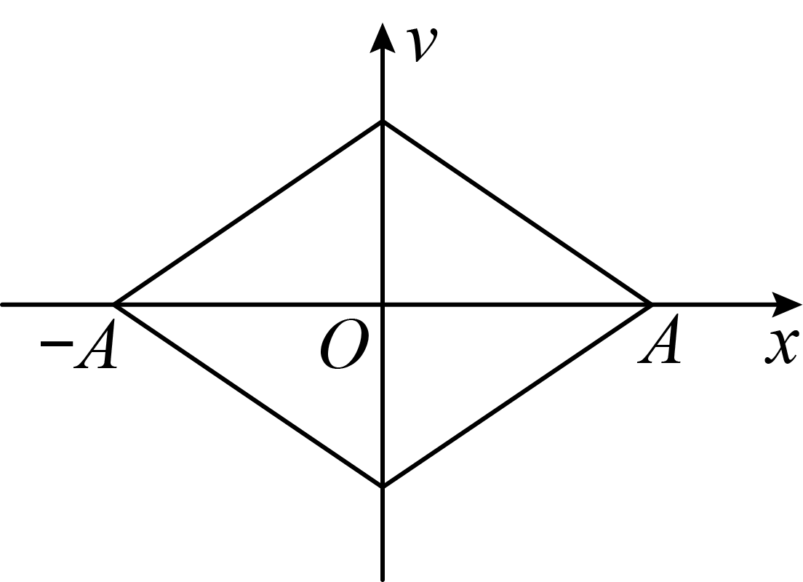
图甲是用力传感器对单摆做小角度摆动过程进行测量的装置图，图乙是与力传感器连接的计算机屏幕所显示的F-t图像，图中F的最大值Fmax=F1，最小值Fmin=F2，重力加速度为g。不计摆线质量及空气阻力。求：
（1）单摆周期T；
（2）摆长l（计算时，可取g=9.8m/s2，π2=9.8）；
（3）摆球质量m的表达式（用题干中的已知物理量表示）。
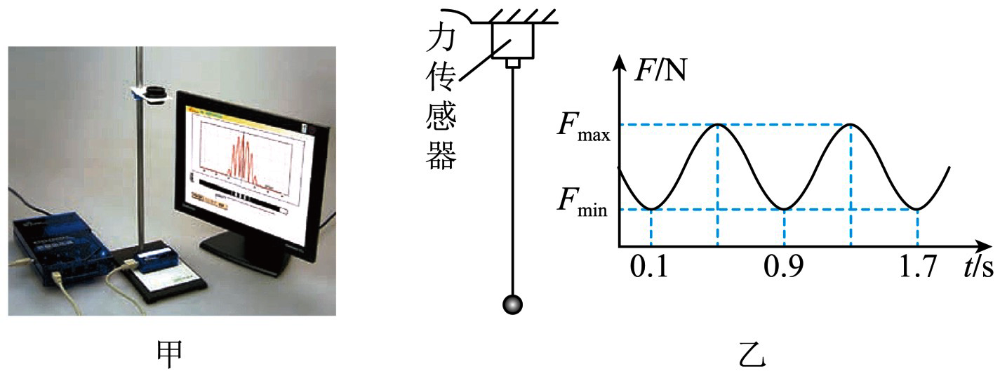
如图甲所示，一个单摆做小角度摆动，从某次摆球由左向右通过平衡位置时开始计时，相对平衡位置的位移x随时间t变化的图像如图乙所示。不计空气阻力，g取10m/s2。对于这个单摆的振动过程，下列说法中正确的是（ ）
如图甲所示，一个单摆做小角度摆动，从某次摆球由左向右通过平衡位置时开始计时，相对平衡位置的位移x随时间t变化的图像如图乙所示。不计空气阻力，下列说法中正确的是（ ）
下载设置
![]()